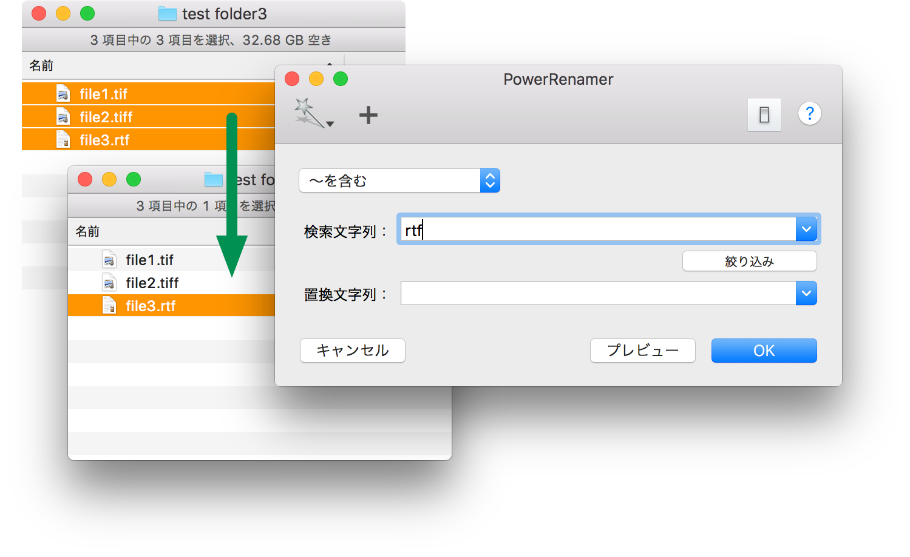

多くのファイルのリネーム処理する時に、適切なファイルだけを選択するのために、PowerSelect を使うのが便利です。PowerSelect は選択された場所から条件にあった項目だけを選択することができます。
PowerSelect はさらに、選択されたファイルから条件にあった項目だけを選別して、あらたに選択項目とすることができます。検索モード、検索文字列を入力して、「絞り込み」ボタンを押してください。「絞り込み」ボタンには、ショートカットキーとして「⌘K」が割り当てられています。
